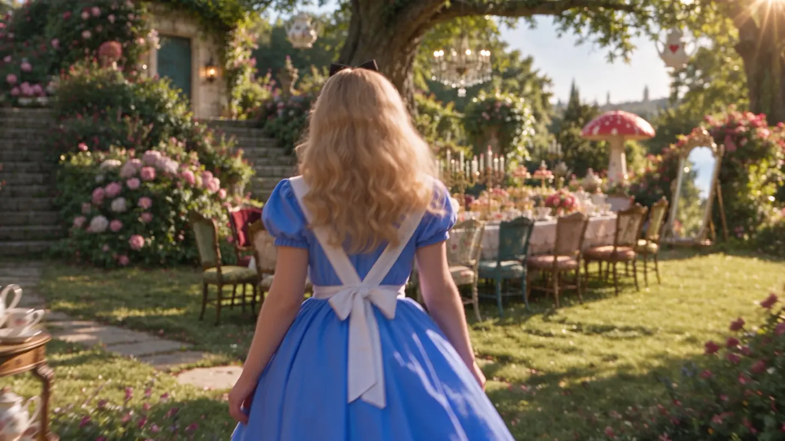

길은 이어지고.
연결된 챕터를
자유롭게 걸어요.
A PLACE FOR YOUR IMAGINATION
눈으로만 따라가던 이야기를
이제, 당신의 발걸음으로 만나보세요.
연결된 챕터를
자유롭게 걸어요.
인물과 사물 가까이에서
움직임을 만나요.
읽기 지점에서 본문을
천천히 읽어요.
어디로 향할지, 얼마나 머무를지.
이야기를 만나는 속도는
당신에게 맡겨 둘게요.
SPACE TO WANDER
연결된 챕터를 자유롭게 걸으며
이야기 속 공간을 둘러보세요.
챕터 지도로 다른 장면을
찾아갈 수도 있어요.

MOMENTS THAT RESPOND
인물과 사물에 다가가면
장면 속 움직임이 시작돼요.
잠시 멀어졌다 돌아오면
그 순간을 다시 만날 수 있어요.
ROOM TO STAY
읽기 지점에서 본문을 펼쳐요.
같은 브라우저로 다시 찾아오면
마지막으로 방문한 챕터에서
이야기를 이어 갈 수 있어요.
브랜드 필름의 장면으로 독서 경험을 소개합니다.
옆으로 넘기며 장면을 둘러보세요.
궁금한 순간은, 눌러서 더 가까이. ↔
첫 페이지 너머, 산책의 시작.
한 발 더, 궁금한 풍경 쪽으로.
서두르지 않아도 좋은 길.
그 장면 곁에서, 잠시 머무르기.
A SMALL INVITATION
20초, 이야기 안으로.
한 권의 책이, 하나의 세계가 되는 순간.